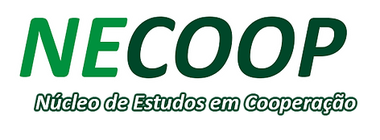

Núcleo de Estudos em Cooperação
Universidade Federal da Fronteira Sul — Campus Laranjeiras do Sul (PR)
• mailto: uffs-necoop@gmail.com
• Insta: @necoop-uffs
• Laranjeiras do Sul, PR - Brasil
© 2026 NECOOP — Núcleo de Estudos em Cooperação / UFFS. Licença de uso público e acadêmico.